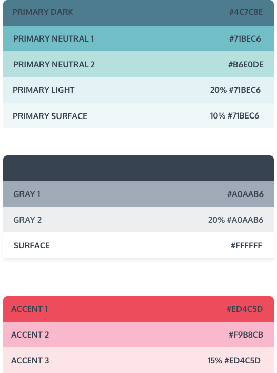
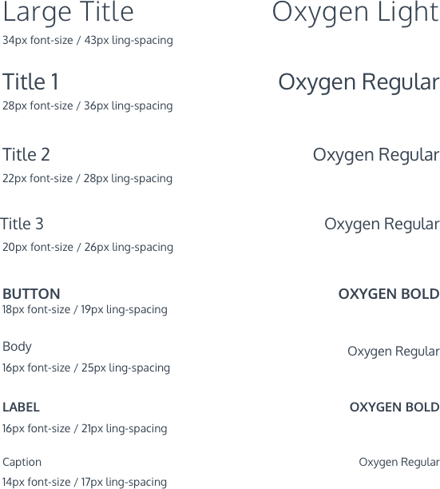
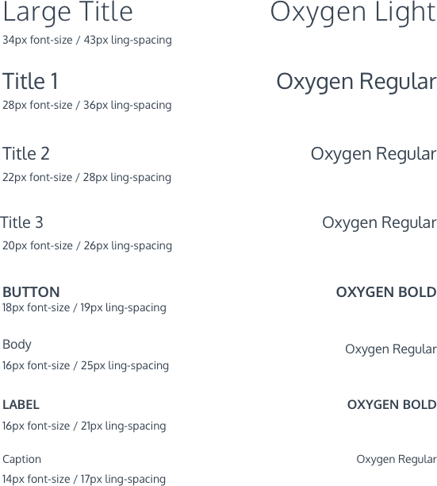
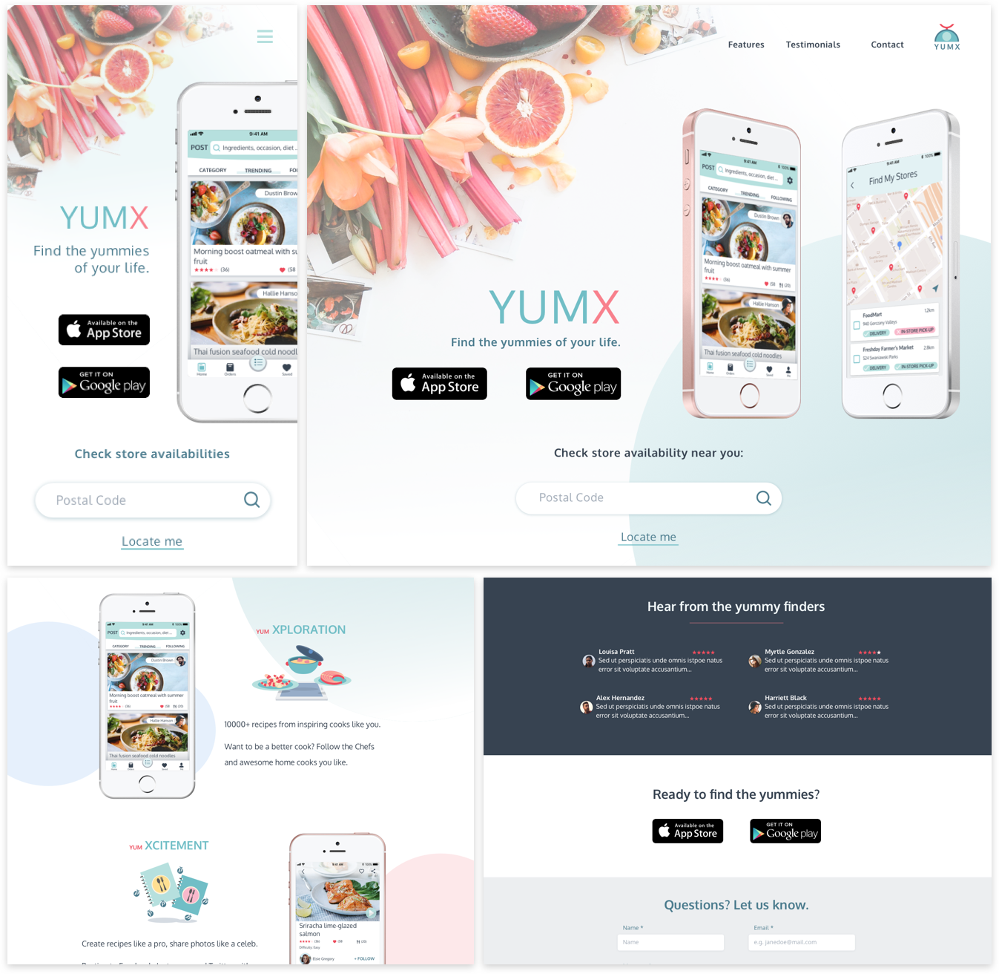

- summary -
E-commerce has seen a massive growth in the past decades as customers enjoyed the convenience of it. Yet in order to have a healthy and sustainable online market, there are other aspects to be considered: supporting local grocery stores, better shopping experience, reducing food waste and incentives to home cooking.
YumX was designed to fill the gaps. The goal of YumX is to unite and simplify the three steps of preparing delicious home-cooked meals: plan, shop and cook, into one intuitive process, while granting the utmost shopping freedom to users by cooperating with their favorite local stores. At the meantime, it provides an atmosphere to encourage, inspire and elevate the next gen home cooks.
- UX/UI design
- Visual design
- Branding & Identity
- User research
- Competitive analysis
- Persona, Journey Maps
- Roadmap, User Flows
- Logo & Style Guide
- Wireframes
- Hi-Fi Mockups
- Prototype
- Usability testing
- Pen & paper
- Adobe XD, Figma
- Sketch, InVision
- Photoshop
- Principle
- Maze
- HTML/CSS, Git
problems to solve
- People prefer to pick fresh produces from brick-and-mortar stores to ensure their quality.
- Due to the large quantity and variety of items, online grocery shopping can be repetitive and tedious comparing to other online shopping experiences.
- Meal plan services help reduce waste and save shopping time, but have limited options and are less affordable.
- High delivery cost is a major barrier for shopping groceries online.
- Home-cooking is cost effective and is more appealing to people who are health-conscious. The challenge is it’s time-consuming and people need better incentives than hunger to step into the kitchen.
A peek at solutions
- Search for recipes by name, occasion, diet, and multiple ingredients. Build a meal plan with favourite recipes.
- A community for cooks, food crafters or foodies to create, post, share their own recipes and gets recognized just as using other social medias.
- Get a shopping list of all the ingredients from the meal plan to use in store.
Buy ingredients in the shopping list right in the app. - Choose to shop from a local store, then get groceries delivered or pick them up.
process
Before conducting researches, I wrote down the following assumptions on how the app could potentially help with the problems I observed or experienced on home cooking and grocery shopping:
- Most people read ratings and reviews before making a purchase decision, but few people give ratings or write reviews.
-- Incentives are needed to encourage people to give feedback. - Online shoppers like the option of free shipping above a certain cost.
-- If people plan out the amount of groceries needed for the next several meals, they can save on delivery and reduce food wasting at the same time. - Shoppers trust the product quality of brands they are familiar with, and are more likely to purchase them online.
-- Brand reputation and customer loyalty are also applicable for grocery shopping.
- exploration -
market research
According to the report by Food Marketing Institute and Nielsen, US Online Grocery Shopper Numbers Double in a Little over a Year, Mar 2018, 49% of US consumers had purchased consumer packaged goods (CPGs) online in the past three months. Among millennials, the rate was even higher, at 61%, and among Gen Xers, it was 55%.
These online shopper numbers have been growing so fast that the FMI and Nielsen forecast that 70% of US shoppers could be buying groceries online by as early as 2022.
Specifically for online grocery spending, it is projected to grow from 5% now to 20% of the market, or $100 billion, by 2025.
Conclusion: Online grocery shopping is about to see its takeoff. There are endless opportunities to explore the market and grow the business if a service can help solving the right problems consumers are facing today.
user research
Two surveys were conducted targeting user behaviors on home-cooking and user behaviors on grocery shopping and online shopping respectively. All results are based on minimum 25 survey responses.
User research on using recipes for home-cooking
Writing vs. reading reviews?
Like to read reviews to determine the quelity of a recipe.
Never wrote reviews.
Common problems with home-cooking?
Can't decide what to make. 76%
Always miss one or two ingredients from the recipe. 44%
Wish to save time on grocery shopping. 36%
What info do you need in a recipe?
Cooking time 76%
Prep time 64%
Budget 60%
Cooking tips 60%
Reviews 52%
What users don't like to see in a recipe?
- Irrelevant content, such as stories and ads.
- Pictures not clearly related to the steps.
- Extra long videos
- Steps that are too complicated.
User research on grocery shopping and online shopping
Main concerns on online groccery shopping?
Shippig fee 64%
Quality 64%
Hard to determine the quantity 44%
What encourages you to shop groceries online?
Shop from known and trusted stores. 68%
Shopping fee can be reduced. 40%
Buy off a shopping list to have less food waste. 16%
secondary research
- According to the research Evaluating Online Grocery Shopping Habits by International Food Information Council, Feb, 2018:
- The biggest barriers to online grocery shopping are cost of items/delivery, and the time it takes for groceries to be delivered.
- The top purchased grocery items are Snacks, cereals, canned goods. While the least purchased items are Meat, seafood, dairy, eggs, pre-made meals, indicating that quality of perishable products is also a concern of online shoppers.
- According to the research Experiences of users from online grocery stores by Mark Freeman, University of Wollongong, Australia:
- What users like
- It's faster than self service in store.
- It's easy to navigate the products categorized by types.
- Product information is easily identified in a set format.
- After getting used to the system, shopping online is much faster.
- What users do not like
- Built-in search function is difficult to use without spelling check.
- Search bar only shows results for specific keywords, not similar or alternative suggestions.
- The process of adding an item to trolley is hard to follow for beginners.
- What users like
competitive analysis
The competitive analysis was conducted with the following apps or companies, who has the similar positioning and target audiences, and provide features or services partially overlap with those our app will potentially have:
Recipe apps
(with or without meal planning feature)
Online grocery shopping service
The strengths and weaknesses of each competitor were analyzed and exciting opportunities were discovered:
- Build meal plans based on recipe collections, then generate grocery list for the meal plan.
- Filter search results by reviews, ratings etc.
- Editing saved recipes.
- Recipe recommendations on the homepage as inspirations.
- Beautiful picture as thumbnails is a plus for user's recipe searching experience.
- Combine ingredients in the shopping list.
- Use-up-leftover feature.
- Provide nutrition information.
- Offer users to choose from their favourite stores so that they have options of delivery, pickup or simply go to the store and find the items on the shelf.
- Membership option or credit system to help reduce shipping cost.
- Have nutrition, allergy, diet info of the product when shopping online.
Meanwhile, there are several challenges that both the competitors and our app are or will be facing:
- Delivery for rural areas can be pricey.
- Purchase ingredients from different stores in one order is difficult.
- Pricing strategy: Free download to attract users. Upgrade to unlock more features for power users. But how to determine the free and paid features is a challenge to fulfill various user needs.
- Process of selecting alternatives within the same store.
- How to encourage purchase when the minimum expense for free shipping is not met.
- Helping customers determining the quantity of goods.
- Delivery services vary between stores. How to help users quickly determine which store to use when shopping.
- ideation -
The previous assumptions were validated and I also gained a lot of new insights from the researches. By grouping together the statistics, key facts, observations and insights in the form of an affinity diagram, three personas were identified. Each of them represents a potential group of targeting audience with different pain points, motivations and preferences.
Customer Journey Maps for each persona were created to further help pinpoint the touch points, then determine the key features with the help of a Value Proposition Canvas.
User persona & Customer journey map
Persona One
Alex, 23 Y.O. Medical School Student “I like cooking and want to improve my skills. But getting groceries online can be expensive with the shipping fee when I'm not buying a lot.”Bio
Alex is a third year medical school student studying in Vancouver. She is super busy with her courses but she always tries to cook at home because she likes cooking and considers it a break from school work. The bonus is it’s a lot cheaper than eating in the cafeterias. She usually cooks 1-2 times per week to prepare meals for the next several days and mainly relies on Google to find her recipes. But the quality of the recipes varies so much, and it always takes her a long time to build a list of meals. Also getting groceries is far, tiring and time consuming. She is a frequent online shopper and would get groceries too if it doesn’t cost extra for delivery.
Goals
- Plan out next several meals.
- Make something different.
- Use up leftover ingredients.
- Keep the budget reasonable when shopping online.
Motivation
- Eat cheaper and healthier.
- Know the cooking time of a recipe.
- Use reviews and ratings to determine the quality of a recipe.
- See recipes from people she follows.
- Need monetary incentive for shopping online.
Frustration
- Prefer videos as cooking instruction but doesn’t like them to be extra long.
- Too many search results to choose from.
- Online meal plan services are too expensive.
- Shipping fee is too much.
Persona Two
Jesse, 31 Y.O. Account Manager “I prefer eating at home because I try to eat healthier. But it takes too much time to buy groceries and cook.”Bio
Jesse works at a big technology company in NYC. Not like most of the white collars, he doesn’t live his life just between home and company due to the frequent needs of meeting customers all around the city. He tries to eat healthier by cooking his own meals to stay away from restaurants and fast-foods, but he rarely finds time for shopping. Even when he does sometimes, he always feels lost standing between the isles without an idea of what to cook, and ends up heading towards a cafe next door. He needs a easy to to find simple dishes he can cook at home and a magic of having groceries appear in his fridge.
Goals
- Practice home cooking.
- Eat healthier.
- Save time on grocery shopping.
- Monitor calories of meals.
- Plan out meals before shopping.
Motivation
- Get recommendations based on diet preferences.
- See cooking instructions with pictures.
- Read reviews of a recipe.
- Cook for special occasion.
- Shop online to save time.
- Get a membership to cover delivery.
Frustration
- In-store shopping takes too much time and effort.
- Online shopping takes a long time when browsing without a shopping list at hand.
- Recipes with irrelevant information such as stories and advertisements.
- Pictures are not clearly relate to instruction steps, or of bad quality.
Persona Three
Etta, 35 Y.O. Part-time Office Clerk “I like going to grocery store and pick out the freshest ingredients for cooking. But there's always too much temptation and I tend to have ingredients that don't go along together. I'd have less waste if I plan ahead.”Bio
Being a mom with 2 kids and working a part-time job in an Attorney Agency, Etta enjoys her work-life balance. She likes preparing nutritious meals but it’s hard to keep the kids excited with the same dishes, so she always needs inspirations on cooking. When she finds a good recipe she will write a review, and post the photos to her instagram. Although she likes to pick up the ingredients in store to get the best quality at the best price, if the store she always goes to delivers her groceries, she would consider trying it out to save the travelling and shopping time.
Goals
- Get inspirations for cooking.
- Know the number of servings from a recipe.
- Get cooking tips.
- Buy quality food ingredients.
- Find nutrition information of the product.
- Have a shopping list to use in store.
Motivation
- Get recommendations based on seasonal products.
- Find recipes for specific ingredients.
- Find recipes for certain type of dishes.
- A good place to post and share recipes.
- Have a place to keep all the shopping lists.
- Buy quality groceries online from trusted stores.
- Reduce wastes by cut the temptation on buying extra.
Frustration
- Cooking instructions are not detailed enough.
- Quality of recipes are not consistent when judging by ratings.
- Needs a easy way to keep shopping lists organized and always available when needed.
- Worries about food quality when shopping groceries online.
- Browsing individual items, determining the quality and quantity then adding them to cart take quite a bit practice to make online shopping faster.
User stories
Based on the app features determined previously, I wrote user stories for new users, returning users and all users. The importance of each user story was evaluated following the 80/20 rule in order for our app to function as a MVP, while having enough features to differentiate it from the competitors.
see all user storiesUser flows
The most fundamental user flow of the app is to find and use recipes to build a grocery list, then shop for the ingredients.
In order to visualize the flow in a more detailed manner, it was broken into five lower level tasks to be used as guidances for the initial wireframing and user testings later on: on-boarding, find recipes, use a recipe, use the shopping list, and in app purchase.
Roadmap & Content Strategy
A roadmap was created to layout the basic structure of the screens users interact with, then it was iterated upon by analyzing the Tree Tests results obtained using Optimal Workshop.
Major changes were made on the Order folder, Settings/Profile menus in Me to improve the clarity of hierarchy and navigations based on the clicking paths and user feedback.
Examples of Tree Test results shown in pie chart:


The initial and updated Roadmap:
After getting a working skeleton of the app, a Content Strategy document was created for each screen to add the flesh. The goal was to further clarify and establish the function of each screen, while maintaining a consistent tone throughout the experiences.
view content strategyWireframes
Once a clear content inventory was established, I sketched out wireframes for the main user flows, then digitized using Adobe XD. A clickable prototype were created with ~80 wireframes and two rounds of usability testing were conducted.
During the testing, users were asked to complete three tasks based on the five main user flows: sign up for an account, search for recipes, then shop for the ingredients. Some major testing results and iterations are summarized as below:
- Some copies used in onboarding, alerts and buttons were modified to be more specific about the actions and link destinations, provide clear instructions/information to better guide users through the task.
- For users to select stores to shop from, a map visually showing store distances is more straightforward than numbers in a list.
before
after
- Users commented that they would like to see more information on the products they were shopping for, and wanted to know right away how much the order would cost. So I added a fixed footer that shows the updated total amount and other costs.
- The Basket screen shows store and grocery information for users to edit, then choose how to get the groceries. It was observed that users get overwhelmed by the amount of information provided because they tend to scroll through the entire screen right away to obtain a general idea of what they can do next instead of following the intended top-to-bottom shopping flow. Also, users commented that the concept of Basket confused them as it also contains a checkout process. Therefore, the store selection and product editing were divided into two steps, and checkout was separated out into a standalone process.
before
after
Final Wireframes
- branding -
In order to create an effective and attractive branding image and tone for the app, it was crucial to determine the target audience based on the early market researches and persona profiles.
Mission
The mission of our app is to encourage home-cooking by providing an easy and time-saving way to shop for groceries of good quality. People who are interested in or want to get better at cooking but live a fast-paced lifestyle, and people who simply want to enjoy the convenience of online shopping at an affordable price, are our primary target audiences.
Therefore, the branding should convey an energetic, healthy and reliable image to users.
The name of the app, YumX, was chosen to clearly convey the app functionalities. In which, X stands for the app’s missions to provide a better cooking and shopping experience:
-
Exploration
So many ways to discover something new and yummy that you can make in your kitchen.
Light the stove, brighten the day. -
Expectation
Share your cooking stories, recipes, and tips with the community.
Get inspired, get better. -
Express
Order ingredients right in the app with your trusted vendors.
Shop smarter, eat healthier. -
Experience
Save time to enjoy home-cooking and spending quality time with family and friends.
Share the happiness, save the memories.
Logo
B/W Logos Preference Test
Coloured Logos Preference Test
The logo evolved through several rounds of iterations based on feedback from Preference Tests. The goal was to create a unique, simple, versatile logo that symbolize the brand identity as an assistant in cooking and grocery shopping.
Finalized YumX Logo
Colour Palette
Colors express emotions. Red and green are the most pleasant colors to boost people’s appetize. The combination is vibrant and energetic. With the green being toned down as the primary color, it establishes a friendly, reliable feeling, as well as a clean look.
Typography
Typeface Oxygen was chosen for both large and small font display. Its geometric round shaped structure resonates with the app logo and provides a clean and minimal look especially for the information-intensive screens. Oxygen is also a sans-serif typeface with a large x-height, which guarantees a good readability on mobile devices.
 
view style guide

view style guide
- Prototyping & Testing -
Finally, it was time to add icing on the cake! With all the styles applied and details tuned, ~100 high-fidelity screens were mocked up in Sketch, then exported to InVision to create a clickable prototype for usability testing.
The goal is to further evaluate whether the color scheme and stylized elements are in harmony with the layout and enhance the usability; if they help convey clear messages and assist users in navigation to complete the tasks.
Usability Testing
The usability testing includes a scenario and three tasks for users to perform. The tasks still features the five main user flows as tested for the low-fi wireframes.
view testing scriptThe testing was conducted both in the form of in-person and online interviews, and as a click-through test using the online usability testing platform, Maze. See the video below for one of the usability testing session recordings:
usability test recordingAside from the major user flows, tasks such as posting photos, using app credits and other features were also tested in Maze with ~15 testing results collected for each round of iteration. Heatmaps and paths generated from the test results helped pinpoint issues on both visual elements and layouts.
Key Findings & Solutions
The main design challenge that went through rounds of iterations was the transfer of ingredients from a recipe to Grocery List, then to Shopping Bag for editing. At first, options were given in a notice to stay on current screen after adding ingredients, or go to the destination. It was observed that the notice caused bouncing between screens and determined to be necessary. By removing them, users get to the destination screen immediately without the need for a second thought whether to stay or not.
Deleted alerts
-
Although the process was made less overwhelming, the concept of Basket, later changed to Shopping Bag for better understanding, still caused confusions. Users had difficulties in understanding where the items will be once added/deleted items, or cancel an order halfway.
A tutorial screen was added to help with the confusion, but users tend to jump right out of any instructional modals. So I went back to revisit the in-app purchase user flow while re-imagining the entire shopping process with all the possibilities. It was found that although holding unfinished orders in a Shopping Bag was a function that most of e-commerce sites have, however, in the case of this app, once users decided on the items to buy from the Grocery List, it was more natural to finish the checkout process or cancel the deal all together. So the extra status of saving orders in the Shopping Bag was redundant. Changing it from a ‘physical’ place in the app to a ‘stage’ that only exists right before the checkout process reduced users’ cognitive load.
As a result, the in-app purchase flow was simplified after all the iterations. And the test results showed a much better success rate of the task.
-
Because users were unfamiliar with the Pantry feature, the initial attempt was to introduce it with an alert window when adding items for the first time. However, it seemed to interrupt the flow and caused confusion when users stopped to read it and found the content was not related to their immediate tasks. Also it was not very helpful for understanding the Pantry feature because users forget about reading it after finishing their task that didn’t involve using it.
That was when I came across an article, in which the author interpreted the Yerkes Dodson Law as “ideal engagement allow or assist in user’s intrinsic motivation. But over-stimuli brings down productivity.” This made me revisit the necessity of the feature of adding items to Pantry from Grocery List and Shopping Bag in the flow. Upon realizing the bonus feature was interrupting user’s immediate goals, I decided to completely take it out. And less struggles were seen on the task.
before
after
-
When users select stores in the onboarding stage, they were questioning the correlation between map pins and the listed stores. And they thought only one store can be chosen.
So I made the following changes:
Extra screens were added to show the change of status when users tap on a pin or a store card: A bubble pops up pointing at the store location on the map, the card is highlighted and scrolls to the top of the list.
Changing the look of the checkboxes to eliminate the confusion with radio buttons.
before
after
-
When the search bar is activated, search histories are displayed on a blank background as shortcuts. Once started typing, the search suggestions were displayed in a dropdown box from the search bar with recipes displaying on the background. During testing, users expected the background recipes to be updated while typing, which was not intended for. So in order to reduce the distraction, all the search background were changed to blank while the search bar is in focus until users press Go to confirm the input. Only then the page will be refreshed with search results.
before
after
Final Product
Marketing Website
With all the product features, identities, style guide and Hi-Fi prototype ready, the idea of creating a marketing website came up to me. The website will be a place to provide users a preview of app functionalities in a more attractive and interactive way than app stores. It also function as a channel to introduce company’s mission and vision, connect with customers, as well as potential business clients (next stage of the app if time permits).

- Conclusion -
It has been a very rewarding journey designing the app from the ground up. Some users from the testing loved the business model introduced in the app. Some commented they’d use it for cooking and would like to try buying groceries with it because it seemed very convenient. Starting from looking up recipes and planning out meals simplified the pre-purchasing stages, and the online checkout process is no stranger to most shoppers. The main challenge of the app was to seamlessly combine them and making it an intuitive experience to assist users achieving their goals, which was significantly improved after rounds of iterations.
As a testing-intensive project, the design of YumX benefited from the various tools available online. Learning about the theories, strengths and limitations behind the tools helped in selecting the right one to use and in analyzing the results.
If given more time, I would collect more user data for each testing in order to reduce the potential sample bias in qualitative results, and increase the confidence interval of qualitative results to avoid contradictions I noticed from some of the results. Also, positioned as a SaaS app, YumX also needs interfaces to collaborate with clients to provide functionalities such as inventory logging, promotion prompt, order combinations, etc.
Key Learnings
-
“Confidence through clarity.” One of the design principles followed by Dropbox design team.
To my understanding, the confidence were reflected by two aspects in this design journey: The confidence users have when trying to complete a task, which is gained from a clear layout of information and a well structured user flow. Another is the confidence in the test results, which is gained with the prerequisite of clearly stated questions or instructions. When a result is not as expected, both the design and the experiment itself need to be reviewed to find the root cause of an issue.
-
“Flow through focus.” Yet another design principle by Dropbox.
Users need motivations to stay focused and move towards a goal, which is very often the satisfaction of placing an order. In YumX’s case, successfully placing an order. Any other elements or features become distractions and reduce productivity if they are not related to the immediate task. They are extra information to process and increase users’ cognitive load, which, no matter how exciting and useful, should be excluded from the flow.
-
UX copy is not ‘Icing on the Cake’.
I kept being reminded of the importance of UX copy throughout the process, starting from defining the characteristics of the brand, determining what’s attractive and motivative for the onboarding process, to the accuracy of CTA buttons and effectiveness of instructions, etc. UX copies are definitely not something to be considered only after having all the visuals, but rather the strategic layer woven into each design stage that could affect the overall user experience.
-
Fight the Ikea Effect.
I guess there is a fight every designer has had with the pushback from testing results. Art is subjective, while design is objective. Design with data and keep moving fast through iterations kept me from getting too attached to the designs and move forward.